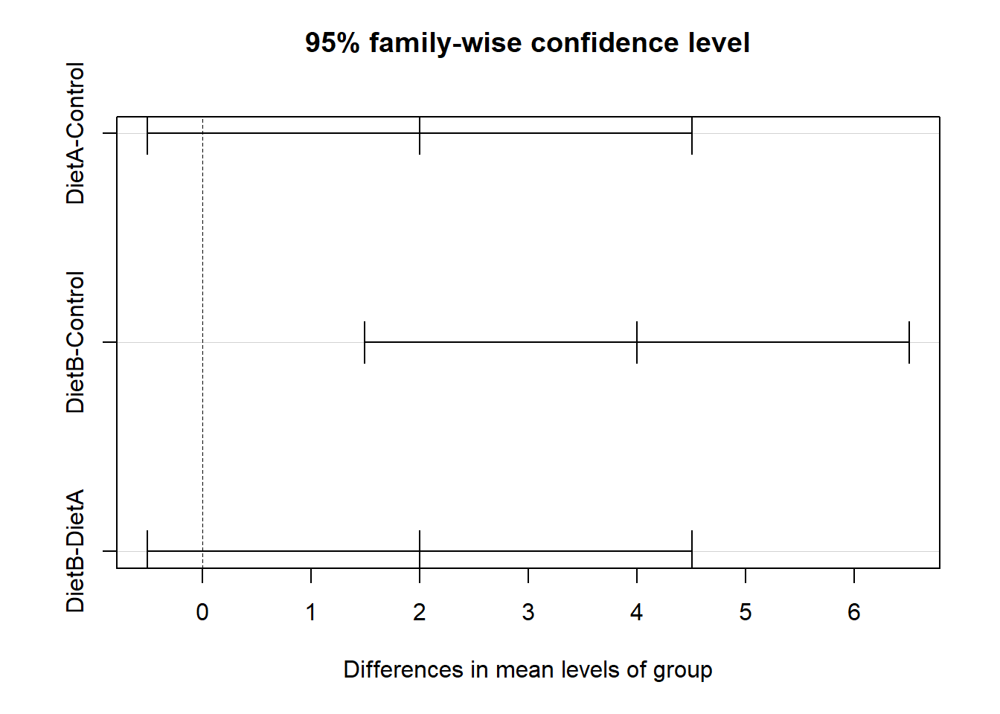

Warning: package 'car' was built under R version 4.3.3Warning: package 'carData' was built under R version 4.3.3We can use the f-distribution for ANOVAs (Analysis of Variance), which we’ve seen can be used to compare models, but they are also great for categorical variables.
A linear model with only categorical predictors have traditionally been called analysis of variance (ANOVA). The purpose is to find whether statistically significant differences exist between the means of several independent groups.
We want to compare the global mean to all sub-means.
We can variance in the data by the following:
Allowing for each group to have its own means accounts for \(\frac{SSB}{SST}\) percent of the variability. This is very similar to an \(R^2\).
Given \(I\) number of groups/categories and \(N\) total number of data points (across all groups/categories; recall that groups can have different number of data points):
Given:
\(F_{stat} = \frac{SSB/SSB_{df}}{SSW/SSW_{df}} = \frac{\frac{SSB}{I-1}}{\frac{SSW}{N-I}}\)
Rejection Region: \(F_{\alpha,I-1,N-I}\)
It’s common to summarize everything associated with the analysis of variance in a table.
Given the example:
| Control | Diet A | Diet B |
|---|---|---|
| 3 | 5 | 5 |
| 2 | 3 | 6 |
| 1 | 4 | 7 |
| ANOVA | SS | DF | SS/DF | \(F_{stat}\) |
|---|---|---|---|---|
| between | 24 | 2 | 12 | 12 |
| within | 6 | 6 | 1 | |
| between | 30 |
\(y = Control + \text{Effects of Groups} + Errors\)
A point in group \(i\) would look like:
\(y = \beta_0 + beta_i + \epsilon\)
We use indicator variables to set this up:
\(x_{ij} = \begin{cases} 1 \\ 0 \end{cases}\)
We choose one group as control and create the model:
\(y_{ij} = \mu_0 + \tau_1 x_{1j} + \tau_2 x_{2j} + \dots + \tau_{I-1} x_{{I-1}, j} + \epsilon_{ij}\)
where \(y_{ij}\) is the \(j^{th}\) response for the \(i^{th}\) group
Recall our example:
| Control | Diet A | Diet B |
|---|---|---|
| 3 | 5 | 5 |
| 2 | 3 | 6 |
| 1 | 4 | 7 |
| \(y_{ij}\) | \(y_{1j}\) | \(y_{2j}\) |
|---|---|---|
| 3 | 0 | 0 |
| 2 | 0 | 0 |
| 1 | 0 | 0 |
| 5 | 1 | 0 |
| 3 | 1 | 0 |
| 4 | 1 | 0 |
| 5 | 0 | 1 |
| 6 | 0 | 1 |
| 7 | 0 | 1 |
The F-test gives us a single conclusion on a model like this: groups matter. It doesn’t tell us how much or which groups matter. To answer this, we have to resort to more individual tests, like testing group A against group B, group A against the control, and group B against the control.
However, this sets us up for Type I Errors.
Given an error probability of \(\alpha\), what is the total probability we commit an error?
\(P(\text{no error}) = \prod\limits_{i=1}^{I} P(\text{no error}_i) = (1-\alpha)^i\)
Therefore,
\(P(error) = 1 - (1-alpha)^i\)
If we have 3 features and a set error rate of \(alpha = 0.05\),
\(P(error) = 1 - (0.95)^3 \approx 0.14\)
In summary, \(\alpha\) for the F-statistic tells us groups matter. If and only if the F-statistic is significant, we can perform a careful version of pairwise testing between groups that accounts for both the fact that we’re doing multiple tests and that those tests aren’t independent.
Suppose we determine that some of the means are different. How can we tell which ones?
Tukey’s Honest Significance Test (HST/HSD) post-hoc test for iff we reject the null hypothesis
We can draw a conclusion from both the confidence interval and p-values output from this method (given a prescribed \(\alpha\).
In other words, we’d be doing the same test as before, just pairwise:
Import Libraries
Warning: package 'car' was built under R version 4.3.3Warning: package 'carData' was built under R version 4.3.3Creating the Dataset
Control = c(3, 2, 1)
DietA = c(5, 3, 4)
DietB = c(5, 6, 7)
df = data.frame(Control,DietA,DietB)
df Control DietA DietB
1 3 5 5
2 2 3 6
3 1 4 7Put into Long Format
longdata <- gather(df, group, value)
longdata group value
1 Control 3
2 Control 2
3 Control 1
4 DietA 5
5 DietA 3
6 DietA 4
7 DietB 5
8 DietB 6
9 DietB 7Perform Oneway ANOVA Test (var.equal = TRUE for this test, Var.equal = FALSE is another test)
result <- oneway.test(value ~ group, data = longdata, var.equal = TRUE)The Results
Fstat = result$statistic
pvalue = result$p.value
Fstat F
12 pvalue[1] 0.008We get a low enough p-value that we have enough evidence to reject the null hypothesis and conclude that at least one mean is different.
What about the idea that ANOVA F-test is equivalent to linear regression where the features are binary categorical variables associated with group membership. We can recreate the 0, 1 dataframe.
# x1: indicates membership in diet a
# x2: indicates membership in diet b
x1 <- as.integer(longdata$group == 'DietA')
x2 <- as.integer(longdata$group == 'DietB')
y <- longdata$value
y[1] 3 2 1 5 3 4 5 6 7x1[1] 0 0 0 1 1 1 0 0 0x2[1] 0 0 0 0 0 0 1 1 1dfRegression <- data.frame(y, x1, x2)
dfRegression y x1 x2
1 3 0 0
2 2 0 0
3 1 0 0
4 5 1 0
5 3 1 0
6 4 1 0
7 5 0 1
8 6 0 1
9 7 0 1Perform MLR and compare the computed F-test
Call:
lm(formula = y ~ ., data = dfRegression)
Residuals:
Min 1Q Median 3Q Max
-1 -1 0 1 1
Coefficients:
Estimate Std. Error t value Pr(>|t|)
(Intercept) 2.0000 0.5774 3.464 0.01340 *
x1 2.0000 0.8165 2.449 0.04983 *
x2 4.0000 0.8165 4.899 0.00271 **
---
Signif. codes: 0 '***' 0.001 '**' 0.01 '*' 0.05 '.' 0.1 ' ' 1
Residual standard error: 1 on 6 degrees of freedom
Multiple R-squared: 0.8, Adjusted R-squared: 0.7333
F-statistic: 12 on 2 and 6 DF, p-value: 0.008Use
aov()to create a summary table from original long data
Use
TukeyHSD()on the aov summary to test which weight loss group(s) are statistically different
# NOTE: can set significance level, i.e. TukeyHSD(aov_model, conf.level=0.95)
tukey_test <- TukeyHSD(weightloss_study_aov)
tukey_test Tukey multiple comparisons of means
95% family-wise confidence level
Fit: aov(formula = value ~ group, data = longdata)
$group
diff lwr upr p adj
DietA-Control 2 -0.5052356 4.505236 0.1088670
DietB-Control 4 1.4947644 6.505236 0.0064937
DietB-DietA 2 -0.5052356 4.505236 0.1088670Plotting the Tukey Test Results
plot(tukey_test)
Specifically, we want to check:
Plotting
Levenes’ Test (constant variance)
leveneTest(value ~ group, data = longdata)Warning in leveneTest.default(y = y, group = group, ...): group coerced to
factor.Levene's Test for Homogeneity of Variance (center = median)
Df F value Pr(>F)
group 2 0 1
6 Shapiro-Wilk’s test (normality)
aov_residuals <- residuals(object = weightloss_study_aov)
shapiro.test(x = aov_residuals)
Shapiro-Wilk normality test
data: aov_residuals
W = 0.82304, p-value = 0.03729When assumptions are not met, we can use a non-parametric test known as the Kruskal-Wallis rank sum test, which determines whether or not there is a statistically significant difference between the medians of three or more independent groups. Note this returns a chi-squared value.
kruskal.test(value ~ group, data = longdata)
Kruskal-Wallis rank sum test
data: value by group
Kruskal-Wallis chi-squared = 6.5311, df = 2, p-value = 0.03818We can further determine which groups have significant differences between them by using pairwise.wilcox.test().